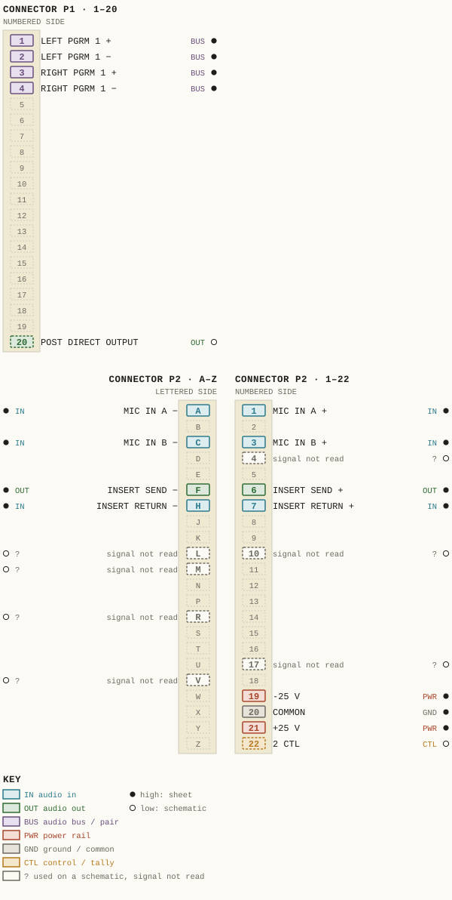
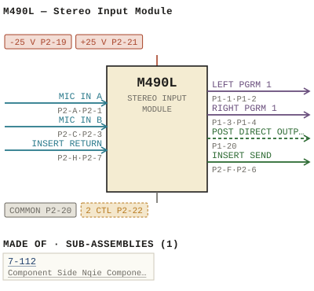

M490L — Stereo Input Module
| Type | module |
| Category | INPUT-PRE-AMPS |
| Try it | simulator & front panel · download package (zip) |
| Earliest dated evidence | 1983|16 — manual issue date |
| Evidence | "ISSUE #1 _ OCTOBER 1983" in PUBLIC/Manuals + tech DOCUMENTS/Modules/M490L - Stereo Input Module/M490L - P025 - 7-112.jpg |
| Confidence | high |
| All years found | 1983|16 |
| Variants | M490, M490A, M490B, M490C, M490D, M490E, M490F, M490G, M490H, M490J, M490K, M490M, M490N, M490T |
| Folder | DOCUMENTS/RECENT SCANS/WBSps.ca 20210317 - Large pile of D |
| Folder | Modules/INPUT-PRE-AMPS/M490L |
Connections and circuit (ideal SPICE model)
Drawn live from its RTO-144 connections: run the generator, turn the gain, watch the VU. Open the netlist to see how the model is built.
Pictures


M490L.pinout.svg

M490L.connections.svg 1983 - M490L - P001 - Title Page.jpg
1983 - M490L - P001 - Title Page.jpg 1983 - M490L - P025 - 7-112.jpg
1983 - M490L - P025 - 7-112.jpg 1983 - 7-112-02-002 - 7-112A CHANNEL AMPLIFIER SCHEMATIC - DRN TR - ENG TR - ISS 1.jpg
1983 - 7-112-02-002 - 7-112A CHANNEL AMPLIFIER SCHEMATIC - DRN TR - ENG TR - ISS 1.jpg 1983 - M490L - 12-02-002 - CONTROL CIB RJI LOOP.jpg
1983 - M490L - 12-02-002 - CONTROL CIB RJI LOOP.jpg 1983 - M490L - 490-01-012 - ENG SCRTLBERT STEREO INPUT MODULE.jpg
1983 - M490L - 490-01-012 - ENG SCRTLBERT STEREO INPUT MODULE.jpg 1983 - M490L - 490-01-012 - TIMER RESET OFF TALLY OFFISTOP FADER.jpg
1983 - M490L - 490-01-012 - TIMER RESET OFF TALLY OFFISTOP FADER.jpg 1983 - M490L - 490-02-010 - EXT RIOO RIOZ.jpg
1983 - M490L - 490-02-010 - EXT RIOO RIOZ.jpg 1983 - M490L - 490-02-010 - MIXIEA BUSES RIGHT CMANNIL.jpg
1983 - M490L - 490-02-010 - MIXIEA BUSES RIGHT CMANNIL.jpg 1983 - M490L - 490-04-024 - SMILCH SWI THIS SICH THE MOMENIARY JCION IDC.jpg
1983 - M490L - 490-04-024 - SMILCH SWI THIS SICH THE MOMENIARY JCION IDC.jpg 1983 - M490L - 490-04-024 - TOR THE INEI CONTROI RIO IDES CONT NUOUS.jpg
1983 - M490L - 490-04-024 - TOR THE INEI CONTROI RIO IDES CONT NUOUS.jpg 1983 - M490L - 490-06-020.jpg
1983 - M490L - 490-06-020.jpg 1983 - M490L - 7-112-02-002 - AND ALL CAPACITORS.jpg
1983 - M490L - 7-112-02-002 - AND ALL CAPACITORS.jpg 1983 - M490L - 7-112-06-002 - COMPONENT SIDE NQIE COMPONENTS.jpg
1983 - M490L - 7-112-06-002 - COMPONENT SIDE NQIE COMPONENTS.jpg 1983 - M490L - 7-112-06-002 - ENT SIDE ISSU.jpg
1983 - M490L - 7-112-06-002 - ENT SIDE ISSU.jpg 1983 - M490L - 90-06-020 - STEREO INIPUT MODULE COMPONENT LAYOUT.jpg
1983 - M490L - 90-06-020 - STEREO INIPUT MODULE COMPONENT LAYOUT.jpg 1983 - M490L - P002.jpg
1983 - M490L - P002.jpg 1983 - M490L - P003 - 1-1.jpg
1983 - M490L - P003 - 1-1.jpg 1983 - M490L - P004 - 1-2.jpg
1983 - M490L - P004 - 1-2.jpg 1983 - M490L - P005 - 2-1.jpg
1983 - M490L - P005 - 2-1.jpg 1983 - M490L - P006 - 2-2.jpg
1983 - M490L - P006 - 2-2.jpg 1983 - M490L - P007 - 2-3.jpg
1983 - M490L - P007 - 2-3.jpg 1983 - M490L - P008 - 2-4.jpg
1983 - M490L - P008 - 2-4.jpg 1983 - M490L - P009 - 2-5.jpg
1983 - M490L - P009 - 2-5.jpg 1983 - M490L - P010 - 2-6.jpg
1983 - M490L - P010 - 2-6.jpg 1983 - M490L - P011 - 3-1.jpg
1983 - M490L - P011 - 3-1.jpg 1983 - M490L - P012 - 3-2.jpg
1983 - M490L - P012 - 3-2.jpg 1983 - M490L - P013 - 3-3.jpg
1983 - M490L - P013 - 3-3.jpg 1983 - M490L - P014 - 3-4.jpg
1983 - M490L - P014 - 3-4.jpg 1983 - M490L - P015 - 3-5.jpg
1983 - M490L - P015 - 3-5.jpg 1983 - M490L - P016 - 3-6.jpg
1983 - M490L - P016 - 3-6.jpg 1983 - M490L - P017 - 3-7.jpg
1983 - M490L - P017 - 3-7.jpg 1983 - M490L - P018 - 3-8.jpg
1983 - M490L - P018 - 3-8.jpg 1983 - M490L - P019 - 3-9.jpg
1983 - M490L - P019 - 3-9.jpg 1983 - M490L - P020 - 4-1.jpg
1983 - M490L - P020 - 4-1.jpg 1983 - M490L - P021 - 4-2.jpg
1983 - M490L - P021 - 4-2.jpg 1983 - M490L - P022 - CD4016.jpg
1983 - M490L - P022 - CD4016.jpg 1983 - M490L - P023 - 74C76.jpg
1983 - M490L - P023 - 74C76.jpg 1983 - M490L - P024 - 74C221.jpg
1983 - M490L - P024 - 74C221.jpg 1983 - M490L - P026 - 7-112 - 1-1.jpg
1983 - M490L - P026 - 7-112 - 1-1.jpg 1983 - M490L - P027 - 7-112 - 1-2.jpg
1983 - M490L - P027 - 7-112 - 1-2.jpg 1983 - M490L - P028 - 7-112 - 1-3.jpg
1983 - M490L - P028 - 7-112 - 1-3.jpg 1983 - M490L - P029 - 7-112 - 1-4.jpg
1983 - M490L - P029 - 7-112 - 1-4.jpg 19xx - DOC - 490-04-024 - OGRAM CHANNCIS BUI-IN.jpg
19xx - DOC - 490-04-024 - OGRAM CHANNCIS BUI-IN.jpgPrice history
| Year | Kind | Price | Listed as | Effective | Source |
|---|---|---|---|---|---|
| 2005|38 | used market value | 100.00 | M490L Stereo Input | wbsps - website ARCHIVE/WBSPS 2008/ARCHIVE/old website/PriceGuide.htm | |
| 2006|39 | used market value | 100.00 | M490L Stereo Input | wbsps - website ARCHIVE/WBSPS 2008/ARCHIVE/jan 2006 shell/priceguide.htm |
Pinout & connections
Each contact as its own documents name it: 17 named (15 high, 2 low confidence). An empty slot is a contact no page names. Hover a contact for its source; the table under the drawing lists them.
pinout (SVG) · connections (SVG) · pins (JSON)
Pin evidence — 24 contacts
| Pin | Signal | Kind | Confidence | Read from | Source |
|---|---|---|---|---|---|
| P1-1 | LEFT PGRM 1 | audio bus / pair | high | rto-144 | M490L.rto144.json, p. 1 |
| P1-2 | LEFT PGRM 1 | audio bus / pair | high | rto-144 | M490L.rto144.json, p. 1 |
| P1-3 | RIGHT PGRM 1 | audio bus / pair | high | rto-144 | M490L.rto144.json, p. 1 |
| P1-4 | RIGHT PGRM 1 | audio bus / pair | high | rto-144 | M490L.rto144.json, p. 1 |
| P1-20 | POST DIRECT OUTPUT | audio out | low | schematic | 1983 - M490L - P007 - 2-3.jpg, p. 1 “Pos[ Direct_Qutput The outputs the left and right chancel amplifiers are summe together before the ba ance switch via R38 R41 This node, no…” |
| P2-A | MIC IN A | audio in | high | rto-144 | M490L.rto144.json, p. 1 |
| P2-1 | MIC IN A | audio in | high | rto-144 | M490L.rto144.json, p. 1 |
| P2-C | MIC IN B | audio in | high | rto-144 | M490L.rto144.json, p. 1 |
| P2-3 | MIC IN B | audio in | high | rto-144 | M490L.rto144.json, p. 1 |
| P2-4 | — | used on a schematic, signal not read | low | schematic | 1983 - M490L - 490-02-010 - EXT RIOO RIOZ.jpg, p. 1 “Ricmt ChannIL (Pz-4” |
| P2-F | INSERT SEND | audio out | high | rto-144 | M490L.rto144.json, p. 1 |
| P2-6 | INSERT SEND | audio out | high | rto-144 | M490L.rto144.json, p. 1 |
| P2-H | INSERT RETURN | audio in | high | rto-144 | M490L.rto144.json, p. 1 |
| P2-7 | INSERT RETURN | audio in | high | rto-144 | M490L.rto144.json, p. 1 |
| P2-L | — | used on a schematic, signal not read | low | schematic | 1983 - M490L - 490-02-010 - EXT RIOO RIOZ.jpg, p. 1 “Pz- L” |
| P2-10 | — | used on a schematic, signal not read | low | schematic | 1983 - M490L - 490-02-010 - EXT RIOO RIOZ.jpg, p. 1 “P2-10” |
| P2-M | — | used on a schematic, signal not read | low | schematic | 1983 - M490L - 490-02-010 - EXT RIOO RIOZ.jpg, p. 1 “Pz-M” |
| P2-R | — | used on a schematic, signal not read | low | schematic | 1983 - M490L - 490-02-010 - EXT RIOO RIOZ.jpg, p. 1 “P2-R” |
| P2-17 | — | used on a schematic, signal not read | low | schematic | 1983 - M490L - 490-02-010 - EXT RIOO RIOZ.jpg, p. 1 “P2-17” |
| P2-V | — | used on a schematic, signal not read | low | schematic | 1983 - M490L - 490-02-010 - EXT RIOO RIOZ.jpg, p. 1 “P2-V” |
| P2-19 | -25 V | power rail | high | rto-144 | M490L.rto144.json, p. 1 |
| P2-20 | COMMON also: COMMON (rto-144) | ground / common | high | rto-144 | M490L.rto144.json, p. 1 |
| P2-21 | +25 V | power rail | high | rto-144 | M490L.rto144.json, p. 1 |
| P2-22 | 2 CTL | control / tally | low | schematic | 1983 - M490L - 490-02-010 - MIXIEA BUSES RIGH…, p. 1 “ca > P2-22 2 Ctl 104883 Comm” |
Dates found in the documents
| Year | Kind | Text | File |
|---|---|---|---|
| 1983|16 | month & year | DECEMBER 1983 |
1983 - M490L - P001 - Title Page.jpg |
| 1983|16 | manual issue date | ISSUE #1 _ OCTOBER 1983 |
1983 - M490L - P025 - 7-112.jpg |
| 1983|16 | manual issue date | ISSUe: 1/1 W :// DECEMBE R 1983 |
1983 - M490L - Stereo Input Module (2).pdf |
Physical manual inventory
| Item | Location | Status | Scanned |
|---|---|---|---|
| M490L - Stereo Input Module | DUPLICATE | SCANNED BUT NEEDS STICHING | |
| M490L - Stereo Input Module | PDF - Already scanned | ||
| M490L - Stereo Input Module | Recently scanned and stiched by WB |
Documents (2)
| Year | File | |
|---|---|---|
| 1983|16 | 1983 - M490L - Stereo Input Module (2).pdf | note |
| 1983|16 | 1983 - M490L - Stereo Input Module.pdf | note |
Photos & scans (44)


Sub-assemblies & parts used (1)
| Item | What | Family | Year | How we know |
|---|---|---|---|---|
| 7-112 | Component Side Nqie Components | Sub-assemblies (n-nnn) | 1983|16 | drawing filed with it |
Parts list — board 7-112 (3 parts)
From 1983 - M490L - P027 - 7-112 - 1-2.jpg, page 1 (scanned); also in timelines/data/bom.csv.
| Ref | Part | Value | Manufacturer | Mfr part no. |
|---|---|---|---|---|
| R1 | Resistor 1/4w 57 Philips | 75K | ||
| R2C | ISk | |||
| R57 | Resistor 1/4w 57 1Ck Philips |
Parts list — board M490L (33 parts)
From 1983 - M490L - P011 - 3-1.jpg, page 1 (scanned); also in timelines/data/bom.csv.
| Ref | Part | Value | Manufacturer | Mfr part no. |
|---|---|---|---|---|
| C19 | uF/10 Kemet | 150 | T390E157M01OAS | |
| C31 | pF Aselco | 6800 | co92-MC-100-682m | |
| C32 | 2.2 UF/35 Kemet | T390C225M035AS | ||
| C34 | delete | |||
| C3S | Capac tor uF/35 T390A | OMO3SAS | ||
| C36 | Capacitor uF/35 Kemet | T390B105MO35AS | ||
| C44 | pF Aselco | 6800 | co9z-MC-100-682m | |
| C45 | delete | |||
| C46 | Capacitor uF/25 Kemet | 7390C1O6MO25AS | ||
| C48 | uF/25 Philips | 426ETF22 | ||
| CR4 | Motorola | INLOO3 | ||
| CR9 | delete | |||
| CR1S | Diode Motorola | IN4003 | ||
| M490L | STEREO INPUI_MODULE | |||
| R16 | Resistor 1/4w 5% Philips | 4K7 | ||
| R30 | ISK | |||
| R31 | Trim Pot Piher PT 1Ov | 20k | ||
| R32 | Resistor 1/Lw 59 Philips | 620 | ||
| R4L | Potentiometer A/B WBS | 10-017 | ||
| R46 | Resistor 1/4w5% IKB Philips | |||
| R51 | Resistor 1/4w 5% Philips | 10K | ||
| R52 | Potentiometer A/B WBS | 10_005 | ||
| R5 | Potentiometer A/ B WBS | 10-005 | ||
| R58 | Resistor 1/4w 5% Philips | 15k | ||
| R135 | Trim Pot Piher PT 10h (2.5) Sk | |||
| R136 | Resistor 1/4w 57 Philips | 620 | ||
| SW3 | Switch WBS | 11-002 | ||
| SW4 | WBS | 11-044 | ||
| SW6 | WBS | 11-002 | ||
| SW7 | WBS | 11-002 | ||
| SW8 | Dialight | 544-3221 | ||
| SW10 | Part ATT1 | |||
| SW12 | Schadow WBS | 11-045 |
From the manuals
Each manual split into its sections. Text that is the same in many Ward-Beck manuals (warranty, address, standard notes) is kept once on the Boilerplate page and linked.
General description (4)
Description — 287 words · 1983 - M490L - P008 - 2-4.jpg, page 1
M490L STEREO INPUT MODULE 210 cMOs dual flip-flop serving Iatch maintain the status the switches, once they have been set either the ON the OFF position number individual input functions govern the status flip-flop 210 . description each input function follows: the dua Initial Reset When ower initially applied the system, the combination CRIO CRII _ CRI2 and C38 wili pull down both ear inputs 210 until C38 fully charged thus ensuring that all solid state switches are the OFF position Channel On Momentary operation the CHANNEL ON switch SW9 wilil produce negative going pulse 21o, pin and "preset" the A-section Z1o.
Alternatively momentary ground closure the EXTERNAL CHANNEL ON control input P2, pin will resuit the same condition. Once tne flip-flop preset its output Pin changes from approximately +10 volts) This wili cause the left and cight PROGRAM switches switch ON Furthermore, 07 wil| saturate resulting the CHANNEL ON indicator lamp DS3 switch on With 07 saturated, the "control common potential appears the emitters 08 and 09 .
positive base potential is applied either Q8 09, depending on whether INPUT SELECTOR switch SwI Sw2 depressed Effectively 08 and operate similarly two AND gates The collectors the two tran- sistors represent the outputs Ihe AND gates They appear P2 , pin and These terminals are capable sinking maximum current MA each from volt source and may be used for muting purposes _ When operating the CHANNEL ON switch SW9 separate contact osed accessible P2, pins 15/s This contact may be used for imultaneous "machine start" Pin P2 isolated through diode CRL When connected parallel with the same output other modu Ies provides convenient OR gate configuration, suitable reset common timer each time CHANNEL ON button depressed 2-4
- source: 1983 - M490L - P008 - 2-4.jpg, p. 1
Description — 288 words · 1983 - M490L - P006 - 2-2.jpg, page 1
M49OL STEREQ INPUT_MODULE Attenuater Tne preamplifier output couplea via C7 one half the mixing attenuator ATTI with the second half ATTI used for the right channel The CUE channel feed taken irom the input side the attenuator. Program Channel Switch 23 cMos analog switch, serving the active switching element the left PROGRAM channe The control voltage operate 23 derived from the logi circuitry within the module and coupled 23 via CR2 To switch the channel ON, this control voltage tne order volts.
When the control voltage drops volts, the swi tch will be OFF resulting signal attenuation more than 100 dB The control voltage used operate 23 also fed into the right channel circuitry via pin E5 on the 7-112A card Booster_Amplifier Following 23, the signal amplified by integrated circuits and 25 nominal level dBm (equivalent voltage) and routed the PROGRAM ASS GN switches SWL and SWS, via BALANCE switch SW3 and BALANCE control R42 R45 Due the dB insertion Ioss the BALANCE control .
the signai level the input SwL and SWS dBm (equivalen voltage) . the right channel the gain fixed result dBm output by insertion jumper wire on PCB 7-112A . The left channel contains tne LEVEL BALANCE control R31 which used match the level the left channel the right channel R3I factory set and should require no further adjustment Unequal level balance would normally be corrected by adjustment the SENsiTivity trim controls RIO and R135 _ The mixing attenuator ATT should be placed the dB "in hand" position make this adjustment_ Program Quteuts Switch Sw3 serves insert the BALANCE control R42 R45 into the signal paths Operation this control permits raising the level one the stereo channels while reducing the Ievel the other 2-2
- source: 1983 - M490L - P006 - 2-2.jpg, p. 1
Description — 223 words · 1983 - M490L - P010 - 2-6.jpg, page 1
M49L STEREO INPUT_MODULE The ON status driven by 06 _ the CUE channels indicated by DS2, which Cut_Off An dditional feature ensures tha the CUE channels will always switcn OFF whenever the slide attenuator moved onto way from the infinite" position, regardless their prior state The control signal for this action initiated by the change state the ATTENUATOR cuT switch SW10.
The resultant Ievel change being either positive negative going, processed through 29, 21i and 212. The output produced pin 212 wili always be negative going pulse approximately 500 milliseconds duration. CRI3 passes this pulse 21o, pin thereby "clearing" the B-section the flip-flop and resulting pin 210 switch (or remain at) vol - t5, turn switching the Ieft and right CUE switches OFF AI logic control inputs are buffered and switch bounce guard against spurious noise Power Supply Decoup_ Jing Power supply decoupling provided by R131 R134 and C48 C51 CRI7 and CR18 serve prevent amplifier damage the event supply voltage reversa The ecoupling network drops the +/-25 velt supply rails nominal voltage +/-18 volts.
010 decouples and ters the positive supply rail, resulting an outpu: +12 volts operate the cMOS circuitry Tn addition _ 24 and 25 are further decoupled +/-16 volts by R36 , R37 C17 and C18 Separate on-board power supply decoupling provided on the 7-112A printed circuit board 2-6
- source: 1983 - M490L - P010 - 2-6.jpg, p. 1
- also in: 1983 - M490L - P018 - 3-8.jpg, p. 1
Specifications (2)
Technical Data — 172 words · 1983 - M490L - P003 - 1-1.jpg, page 1
ML9OL STEREQ INPUT_MODULE Input Sensitivity: -10 +10 dBm (ref . 600 ohm source} Frequency Response: +/-0.5 dB from 30 Hz t0 20 kHz Noise: dB below nominal operating Ievel with mixing attenuator set dB "in-hand" (20 Hz 20 kHz} . Harmonic Distortion: Less than 259 THD from Hz kHz dB above nominal operating level Less than 1% at kHz 20 dB above nomina operating Ievel .
Less than 0 .59 at kHz through cue channel dB above nominai operating Tevel Source Impedance: 600 ohms less, balanced. Input Impedance: 0o0 ohms Output Impedances: 0o0 ohms balanced (program circuits) 60,000 ohms balanced cue circuits) 00o ohms, balanced (post direct) Output Level dBm nominal, +20 dBm max mum. Channel Separation: Better than dB irom 150 Hz 15 kHz Phasing: Input and output terminals designated by numbers are in phase; lower number numbered pair phase with Tower number other numbered pair Logic Input Levels: (To operate CH ON, ch OFF CUE ) Logic Logic +13 voits +16 +24 volts_ External Control Output: (Open collector current sink)
- source: 1983 - M490L - P003 - 1-1.jpg, p. 1
Technical Data — 52 words · 1983 - M490L - P004 - 1-2.jpg, page 1
M49OL STEREQ INPUT MODULE Minimum Ioad impedance: Maximum Ioad current: Maximum supp voltage: Saturated collector voltage: 600 ohms 40 MA. +24 volts_ volts maximum 40 MA load. Power Requirements: +/-25 volts dc, MA maximum MA nominal_ Ambient Temperature: degrees Celsius Dimensions: wide 14.15" high (41 Mm 360 mm 165 Mm ) deep
- source: 1983 - M490L - P004 - 1-2.jpg, p. 1
Parts list (text) (1)
Parts List — 94 words · 1983 - M490L - P014 - 3-4.jpg, page 1
M490L STEREO INPUI_MODULE PART DESCRIPT ON MFG MFG PARI_NUMBER R16 RI7 R18 R19 RzO Resistor 1/4w 5% 4K7 20k 3K3 39k IM Philips R21 R22 R23 R24 R25 IM L70k 2K2 2k2 100K R26 R27 R28 R29 R3O 220k 10k 15k 47k ISK R31 R32 R33 R34 R35 Trim Pot Resistor 1/Lw 59 20k 620 15K 15k 620 Piher Philips PT 1Ov 20k R36 R37 R38 R39 R4Q 390 390 K R41 R42} R43 R4L R45) Potentiometer A/B WBS 10-017 R46 RL7 RL8 R49 RSO Resistor 1/4w5% IKB 1KB IK8 IK8 10K Philips 3-4
- source: 1983 - M490L - P014 - 3-4.jpg, p. 1
Drawings (14)
Each scan with its trace laid over it: the slider runs from the scan to the vector drawing. Click one to see it large and save it as SVG, DXF, KiCad, PDF or PowerPoint.
Stereo Input Module Functional Diagramviewer
Timer Reset Off Tally Offistop Faderviewer
Control Cib Rji Loopviewer
Ext Rioo Riozviewer
Mixiea Buses Right Cmannilviewer
And All Capacitorsviewer
7-112A CHANNEL AMPLIFIER / SCHEMATICviewer
1983 - M490L - 490-06-020viewer
Component Side Nqie Componentsviewer
Channel Amplifier Component Layout Issurviewer
Stereo Iniput Module Component Layoutviewer
Smilch Swi This Sich The Momeniary Jcion Idcviewer
Tor The Inei Controi Rio Ides Cont Nuousviewer
Ogram Channcis Bui-Inviewer
Read from the drawing title blocks.
| Drawing | Title | Date | Drawn by | Checked by | Iss. | Source |
|---|---|---|---|---|---|---|
| B 7-112-02-002 | 7-112A CHANNEL AMPLIFIER / SCHEMATIC | 1983|16 | TR | 1 | file | |
| 12-02-002 | Control Cib Rji Loop | file | ||||
| 490-01-012 | Eng Scrtlbert Stereo Input Module | BD | file | |||
| 490-01-012 | Timer Reset Off Tally Offistop Fader | file | ||||
| 490-02-010 | Ext Rioo Rioz | file | ||||
| 490-02-010 | Mixiea Buses Right Cmannil | U | file | |||
| 490-04-024 | Smilch Swi This Sich The Momeniary Jcion Idc | file | ||||
| 490-04-024 | Tor The Inei Controi Rio Ides Cont Nuous | U | file | |||
| 490-04-024 | Ogram Channcis Bui-In | file | ||||
| 490-06-020 | file | |||||
| 7-112-02-002 | And All Capacitors | file | ||||
| 7-112-06-002 | Ent Side Issu | TR | KAK | U | file | |
| 7-112-06-002 | Component Side Nqie Components | TR | file | |||
| 90-06-020 | Stereo Iniput Module Component Layout | file |